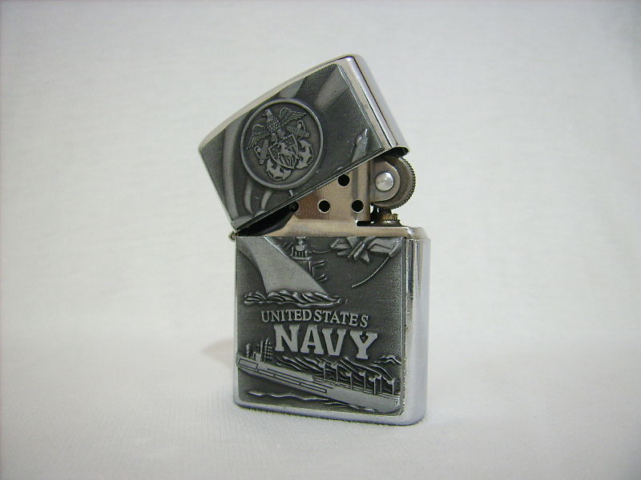

Запальничка Zippo (Зіппо) — металева бензинова вітрозахищена запальничка, що виробляється компанією
«Zippo
Manufacturing Company» у Бредфорді, штат Пенсільванія, США. Компанію «Zippo Manufacturing Company» також скорочено
називають «Zippo» за назвою торгової марки.
Запальнички Zippo часто колекціонують, їхній модельний ряд налічує тисячі моделей та різновидів, вироблених з
1933
року. Вони відрізняються металом, способом його обробки, оформленням і малюнками, що наносяться на запальнички.
Звичайні Zippo виготовляються з латунних, мідних або хромо-нікелевих сплавів, а деякі моделі робляться з чистої
міді, титану, срібла і золота. Відомі також моделі із зовнішнім оздобленням із дерева, шкіри або з гумовими
вставками. За роки свого існування Zippo набула культового статусу і зараз для багатьох є символом американської
якості та надійності.
2007 року Zippo відзначила 75-річний ювілей, до того моменту випущено близько 450 млн запальничок.

Творцем запальнички став Джордж Грант Блейсделл (англ. George Grant
Blaisdell).Легенда описує історію її появи так:
1932 року за часів «Великої депресії» в далекій Америці в містечку нафтовиків
Бредфорд
(Пенсильванія)
всільський
клуб на танці прийшов Джордж Блейсделл. Тоді він був співвласником фірми з виробництва нафтовидобувного обладнання.
Ще в юності він мав справу з металом і був досить винахідливим.
Танці й балачки про політику скоро набридли Джорджу, і він вийшов покурити на веранду клубу,
де знайшов свого друга
Діка Дрессерома. Той лише пихкав і все намагався зняти кришку зі своєї старенької австрійської запальнички. Дік був
забезпеченою людиною, і Джордж дозволив собі зробити йому зауваження: «Чому б тобі не купити кращу запальничку?» Дік
врешті зірвав кришку і чиркнув коліщатком. Незважаючи на сильний вітер, загорівся вогник, і Дік прикурив свою
сигарету. «Тому що ця працює!» — буркнув Дік у відповідь на питання Джорджа. У той же момент Джорджеві спало на
думку: «Запальничка! Ось що постійно потрібно людині незалежно від її матеріального становища!» З того часу голову
Джорджа не полишала ідея виробництва надійних запальничок, доступних кожному.
Спершу Блейсделл вирішив, що зможе продавати австрійські запальнички на американському ринку,
і замовив цілу партію
таких запальничок. Однак тут на нього чекало розчарування: він не зміг продати жодної штуки. Тоді, як стверджує
офіційна історія Zippo, Джордж із притаманною йому винахідливістю дещо вдосконалив конструкцію не надто вдалого
австрійського прототипу, надавши корпусу прямокутної форми і зробивши кришку відкидною, щоб із запальничкою можна
було вправлятися однією рукою, але в іншому вона практично не зазнала змін, навіть кількість отворів у вітрозахисних
стінках лишилася такою ж. Вигадавши таку конструкцію, Джордж зрозумів, що це саме те, що потрібно звичайній людині,
яка має запальничку. Незабаром Блейсделл відкрив маленьку фабрику з виробництва власних запальничок, на якій
спочатку працювало всього 6 людей. Спочатку він хотів назвати свій винахід «Zipper» — просто тому, що йому
подобалося звучання цього слова, але ця назва виявилася вже запатентованою, і він зупинився на «Zippo». Нова
запальничка припала до душі покупцям через простоту і надійність конструкції і відразу ж завоювала успіх на ринку,
багато в чому саме завдяки успішній рекламній кампанії Джорджа Блейсделла. Найперша модель запальнички Zippo 1933
продавалася за ціною в 1,95 доларів. Виробництво швидко зростало, і 3 березня 1936 компанія отримала патент за
номером 2032695 на конструкцію запальнички Zippo.
Всупереч цій поширеній легенді, Джордж Блейсделл насправді не був одноосібним винахідником
такої конструкції
запальнички з відкидною кришкою і зовнішньою петлею. Патент номер 2032695 був записаний на компаньйона Блейсделла на
ім'я Джордж Гімера (англ. George Gimera). Про це говорить текст самого патенту, в якому саме Гімера вказаний на
першому місці як винахідник конструкції.
Після Другої світової війни виробництво і продаж запальничок Zippo різко
збільшилось у зв'язку з
випуском великої
кількості нових моделей і дуже активною рекламною кампанією в пресі. Багато запальничок кінця 1940-х — початку
1950-х років являють собою справжні шедеври з нанесеними вручну малюнками, в ті ж роки розпочався бум розміщення на
запальничках логотипів різних компаній і використання їх як сувенірних та іміджевих продуктів. Але всі ці роки
дизайн і конструкція запальнички залишалися незмінними, так і дійшовши до наших днів.
Одним з головних рекламних ходів, придуманих Джорджем з найпершого дня виробництва
запальничок, є їх довічна
гарантія. Це означає, що несправна запальничка будь-якого віку і в будь-якому стані безкоштовно ремонтується
компанією з заміною необхідних частин. Це правило діє і в наші дні: якщо встановлено, що запальничка непідробна,
справжня, вона підлягає безкоштовному ремонту незалежно від того, що з нею сталося. Єдина частина запальнички, на
яку не поширюється гарантія — це зовнішня обробка та малюнки на корпусі, які на багатьох моделях можуть з часом
зношуватися і стиратися, а також накладні вставки та емблеми, але й вони можуть бути безкоштовно замінені у разі
наявності аналогічних у сервісному центрі.